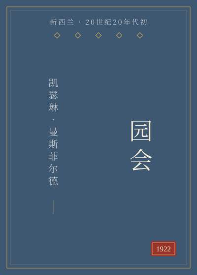
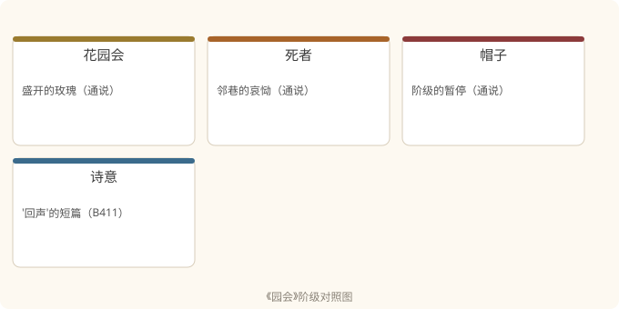

园会
一、基本信息
| 作者 | 凯瑟琳·曼斯菲尔德 |
|---|---|
| 成书/出版 | 1922年（Britannica B411：The Garden Party (1922)——含'At the Bay'/'The Voyage'/'The Stranger'/'Daughters of the Late Colonel'） Katherine Mansfield — Encyclopaedia Britannica（百科全书） |
| 国别/地区 | 新西兰 |
| 时代 | 近代 · 20世纪20年代初 |
| 体裁 | 短篇小说集 |
| 语言 | 英语 |

《园会》阶级对照图（主题·结构图）
二、创作背景
Britannica（B411）：The Garden Party——含'At the Bay'/'The Voyage'/'The Stranger'/'Daughters of the Late Colonel'——后者'a subtle account of genteel frustration'。
Britannica（B411）：曼斯菲尔德——'a master of the short story whose style had many overtones of poetry'——受契诃夫影响——'she in turn shaped the short story's development as a literary form'。
题材（通说待核）：同名篇——劳拉的花园会与死者家庭的'帽子'。
三、内容脉络
（通说待核）劳拉的花园会与邻巷死者的对照。
（通说待核）'帽子'：阶级的暂停与恢复（通说待核）。
四、主要人物表
| 人物 | 身份 | 说明 |
|---|---|---|
| 劳拉 | 谢里丹家小女儿 | （通说待核，B411未载） |
| 亡者之家 | 邻巷穷家 | （通说待核） |
五、主题与艺术特点
- 阶级的'帽子'暂停（通说待核）。
- '诗意回声'的短篇（B411：many overtones of poetry）。
- '文雅的失意'（B411：genteel frustration——Daughters of the Late Colonel）。
六、影响与评论
- Britannica：'secured her reputation and is typical of her art'（B411——Bliss 交叉）。
Katherine Mansfield — Encyclopaedia Britannica（百科全书） - Britannica：'shaped the short story's development as a literary form'（B411）。
Katherine Mansfield — Encyclopaedia Britannica（百科全书）
七、阅读建议
难点
- '诗意回声'的句法。
- 新西兰/英国的双地书写（Prelude 交叉——B411）。
- 《园会》中译本（人民文学等——通说待核）。
- 英文原版（公有领域状态待核）。
曼斯菲尔德首选；与《幸福》对读。
八、待核实
- 劳拉人名核对（通说）。
- 1922年出版（Constable说）待核。
- 'Daughters of the Late Colonel'细节待核（B411已载评语）。
本页主要来源
凯瑟琳·曼斯菲尔德的其他收录作品：园会